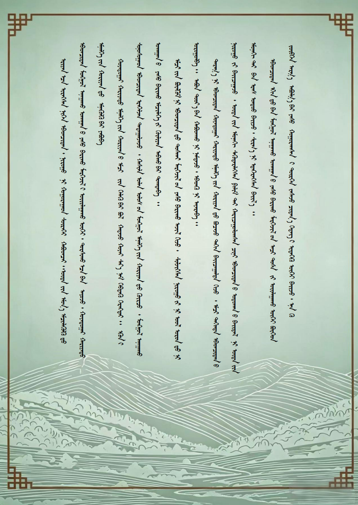
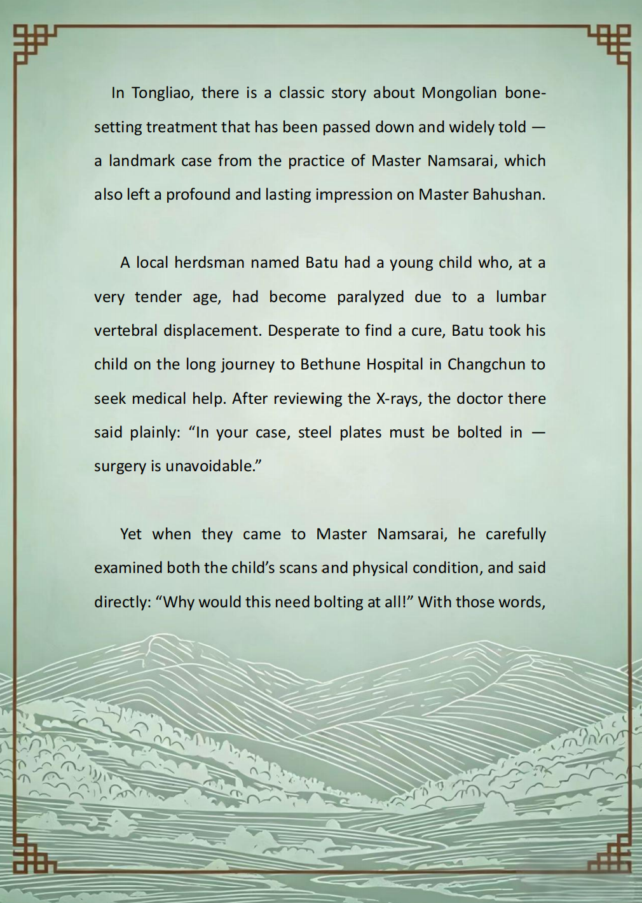
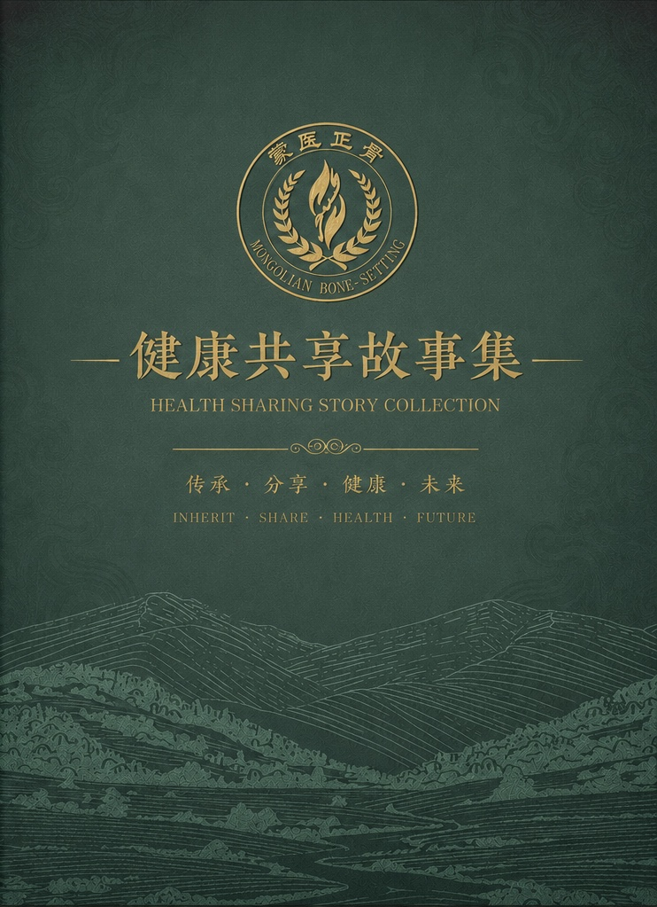
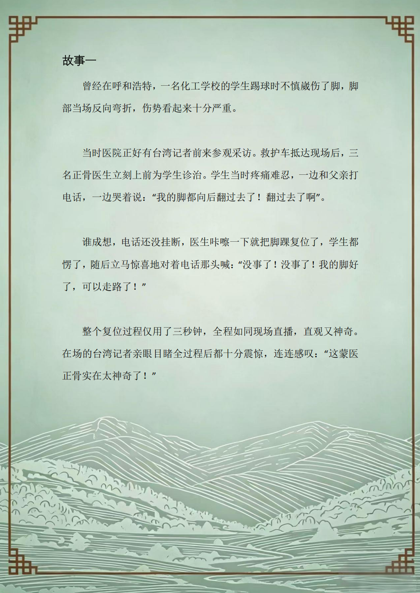

健康故事分享 · 来自非遗传承人的真实诊疗记录
真实案例 · 口述记录




一位学生踢球时严重崴脚，脚踝完全变形。患者被送到医院时，还惊慌地给父亲打电话。巴老师仅用三秒钟便手法复位成功，患者当即恢复行动能力，现场记者对此神奇医术大为赞叹。
腰椎骨折患者腰部肿胀严重，初诊建议长期卧床休养。转诊接受蒙医正骨手法治疗后，患处肿胀即刻消退。前后影像对比差异显著，直观展现出传统正骨疗法独到的治疗效果。
年少时便独立完成肩关节脱位复位，这次经历坚定其钻研正骨技艺的决心。后续深耕专业学识，远赴海外进修，将传统蒙医正骨技法与现代医学理念相互融合创新。